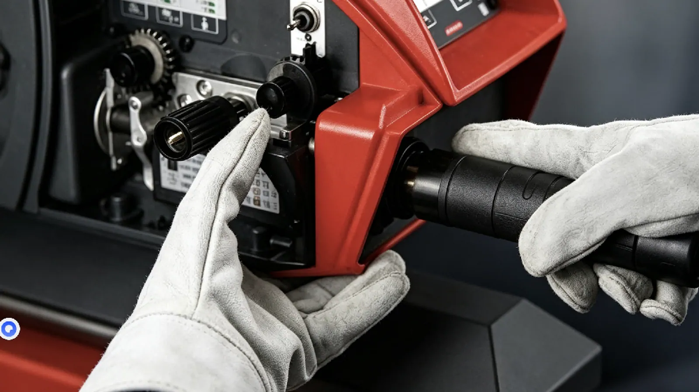
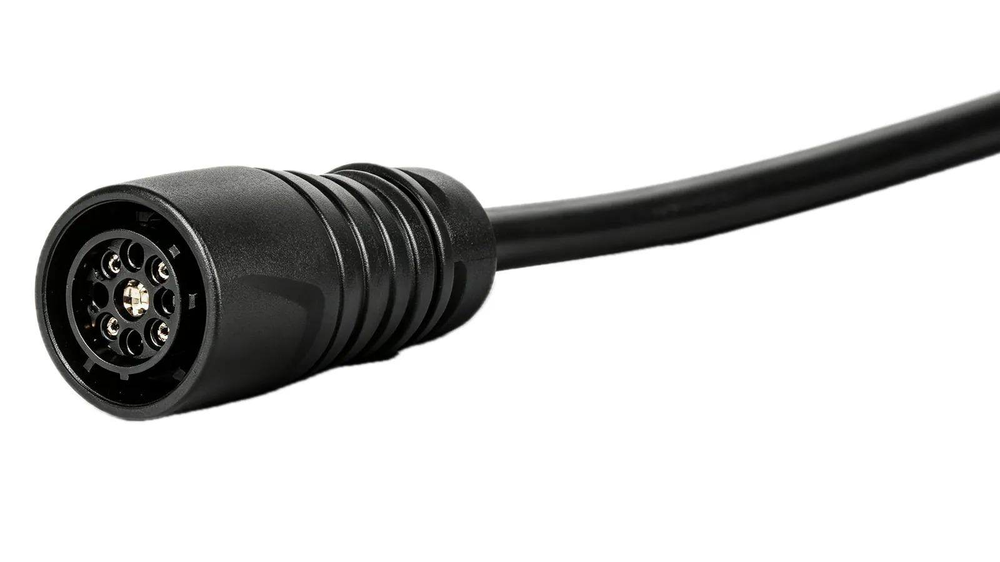
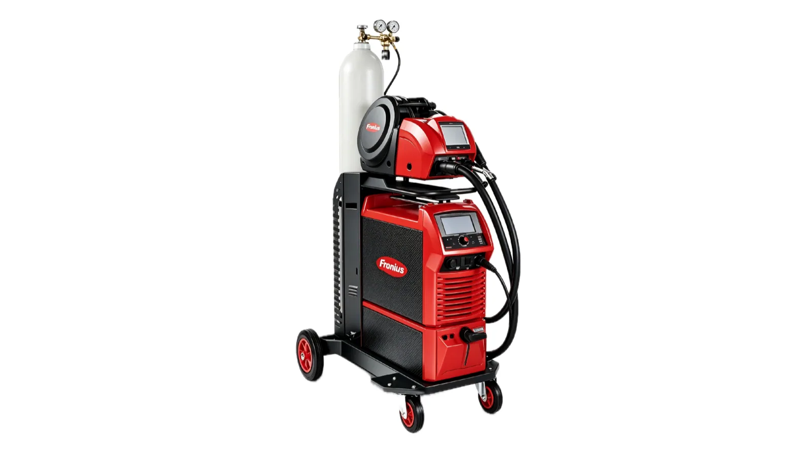
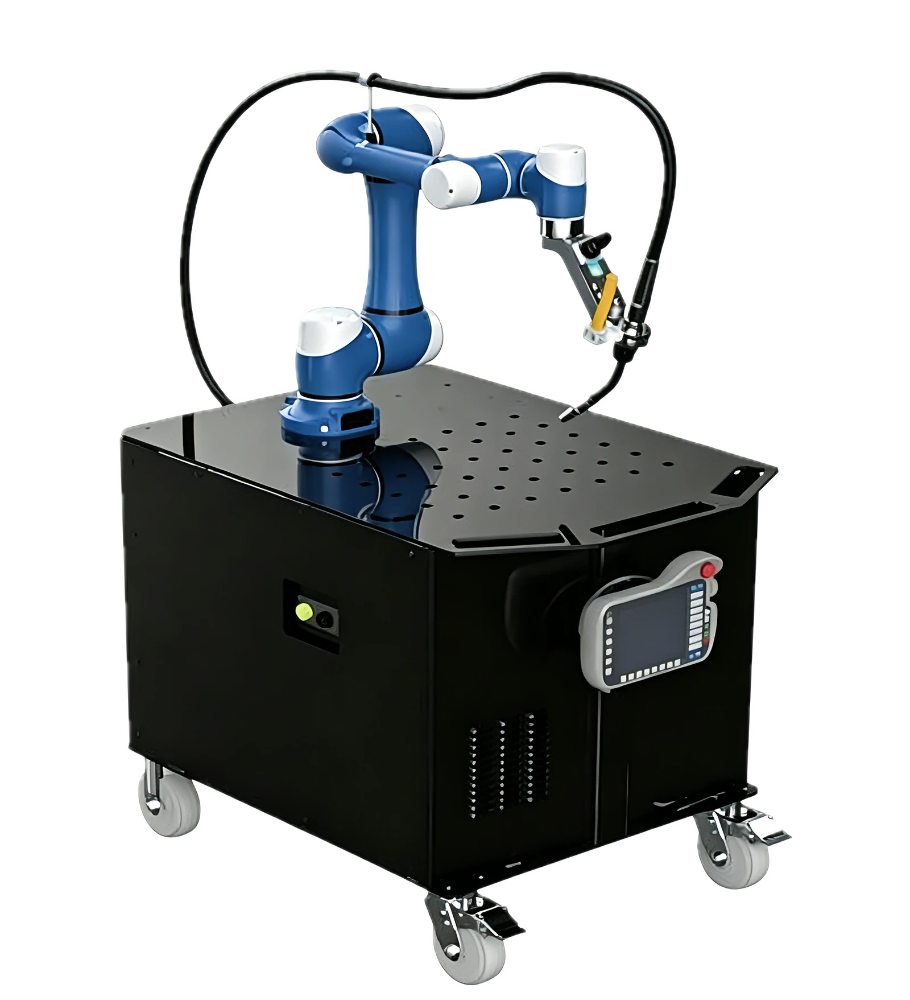

Machine in detail
The power source, torch and connection hardware as delivered.



The Fronius intelligent MIG/MAG platform, rebuilt from the ground up: a 400 A MIG/MAG power source where the welding performance, the human-machine interface and the serviceability were all redesigned together. Modular construction means the power source, wirefeeder and cooling unit scale with the job instead of forcing you into a new machine. 320 A is available continuously at 100% duty, which is what a production cell actually runs at. Everything connects through the FSC interface and SPEEDNET, so robot integration, torch changes and component swaps are a plug-in step, not a rewiring project.

The current, duty and interface figures your welding engineer will check first. Tell us the material, wire diameter and whether the cell is manual or robotic — we confirm the package on the proforma invoice.
| Maximum welding current | 400 A |
| Minimum welding current | 3 A |
| Duty cycle at 400 A | 40% (10 min / 40 °C) |
| Duty cycle at 360 A | 60% (10 min / 40 °C) |
| Duty cycle at 320 A | 100% (10 min / 40 °C) |
| Operating voltage | 4.2–34.0 V |
| Open-circuit voltage | 73 V |
| Power supply voltage | 3 × 400 V |
| Power supply frequency | 50–60 Hz |
| Power supply fuse | 35 A |
| Dimensions | 300 mm × 706 mm |
| Weight | 36.45 kg |
| Protection rating | IP23 |
| Control panel | Plain-text display with graphical and text readout |
| Interfaces | FSC central connection · SPEEDNET 100 Mbit/s bus · Plug and Solder |
* Specifications as supplied for this model. Final configuration confirmed on the proforma invoice.
The full nameplate and interface set, plus what each part of the platform does in production.
400 A maximum, 3 A minimum, 320 A continuous
| Max. welding current | 400 A |
| Min. welding current | 3 A |
| Duty cycle 400 A | 40% (10 min / 40 °C) |
| Duty cycle 360 A | 60% (10 min / 40 °C) |
| Duty cycle 320 A | 100% (10 min / 40 °C) |
| Operating voltage | 4.2–34.0 V |
| Open-circuit voltage | 73 V |
3 × 400 V, 35 A fuse, 50–60 Hz
| Supply voltage | 3 × 400 V |
| Frequency | 50–60 Hz |
| Fuse rating | 35 A |
| Protection rating | IP23 |
| Cooling | Fan-cooled power source |
Compact footprint, trolley-mounted
| Width | 300 mm |
| Depth / length | 706 mm |
| Weight | 36.45 kg |
| Mounting | Trolley with gas cylinder platform and wheel brakes |
Plain-text display, glove-friendly
| Display | Plain-text display with graphical and text elements |
| Panel design | Color, clarity, brightness and button response optimized from field data |
| Operation | Usable with welding gloves on; job recall from the panel |
| Feedback | Wire speed, current and voltage shown as plain text |
One central connection, self-identifying components
| FSC interface | Central connection point for the power source, wirefeeder, torch and cooling |
| Tool-free | Relay lines secured without tools for reliable current conduction |
| Plug and Solder | Components plugged in by hand; the system identifies them and alarms on incompatible parts |
| SPEEDNET | Bus speed up to 100 Mbit/s between system components |
| Robot integration | Real-time status data and precise control through the same bus |
The power source, torch and connection hardware as delivered.


What the Fronius platform changes in a real welding cell.
100% duty at 320 A is the number that matters on a production cell. The power source is rated to keep welding through the shift instead of tripping into thermal protection at the busiest hour.
Power source, wirefeeder, cooling unit and torch are separate modules on a common platform. Add a second feeder or change torch style without replacing the machine.
Plug and Solder connections are made by hand with no tools, and the system recognises the connected part and alarms on an incompatible one — the mis-installation failure that usually costs a shift.
SPEEDNET carries control and status data at up to 100 Mbit/s, so the cell responds to parameter changes immediately and the robot or PLC can read real welding data rather than a proxy signal.
Fronius optimized color, brightness, contrast and button response from how operators actually use the machine — plain-text readout, glove-friendly keys, job recall without menus.
Where a 400 A MIG/MAG source with job memory and a fieldbus pays for itself.
What the power source needs at the wall, and what arrives with it.
| Supply voltage | 3 × 400 V |
| Frequency | 50–60 Hz |
| Fuse | 35 A (time-lag) |
| Supply lead | Sized to 35 A fuse, earthing per local code |
| Working environment | IP23 — indoor, sheltered from direct rain and dust |
| Ventilation | Clear space around the fan intake and outlet |
| Gas | Argon / CO₂ / mixed per your procedure, regulator and flowmeter by the buyer |
What buyers ask before adding a Fronius source to a line package.
Yes — the Fronius platform supplied through our welding line packages, with the Fronius nameplate and serial. Documentation and torch consumables come with the shipment, and service runs through the Fronius network in your region.
400 A is the peak for short, heavy welds. A production cell welds continuously, so the continuous rating is what you can actually schedule. 320 A at 100% on a 10 min / 40 °C basis is the figure to plan takt time against.
Yes. SPEEDNET carries control and status data at up to 100 Mbit/s, and the FSC interface is the single connection point for the torch, feeder and cooling. Give us the robot model and we confirm the interface kit.
3 × 400 V, 50–60 Hz, on a 35 A time-lag fuse, in a sheltered IP23 environment. 380 V or 60 Hz sites are configured at order stage.
Every component connects by hand with no tools and the system identifies it, alarming on an incompatible part. That removes the wrong-torch or wrong-feeder failure that otherwise shows up as a bad weld rather than an error.
The package is quoted with the torch matched to your wire diameter and duty. Tell us the wire size, material and joint type and we specify the torch and liner with the proforma invoice.
A Fronius source is usually the head of a cell — these are the machines that complete it.

Six-axis dual-station cell for precision laser welding of thin-wall assemblies.

Drag-to-teach cobot for loading and unloading weld cells without programming skills.

6 kW vacuum EBW for deep, oxidation-free joints where arc welding cannot reach.
Material, thickness range, wire diameter, manual or robotic, and the supply at your wall. An English-speaking engineer replies within one business day with the matched package.